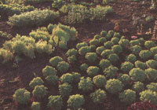

Garden & Yard
Use your own backyard to save heirloom seeds from extinction.
Consider the seed, a tiny speck, seemingly lifeless, that one day will expand thousands of times its size to become a sunflower or corn stalk, or a 60-foot redwood. Think of the potential waiting in each seed, the diversity of life it carries, the memory of its ancestors of how to grow and make more seed, how to adapt to the sunlight and soil around it.
Now consider your relationship to the seed. Once a society of foragers, our food supply today depends on agriculture. We've intervened in nature's flow of continually fruiting and re-seeding itself and carrying on each species' evolution. We've become stewards of the seeds, domesticating many of them, taking responsibility for their success or demise.
We may shop at the farmer's market or whole foods store; we may even consider ourselves self-sufficient, growing our own produce. But where do our seeds come from? Most likely the garden center or the pages of seed catalogs that appear every year in our mailboxes.
So we plant these seeds and harvest their fruits and next year start the whole process again. And there's the catch. Every year we must return for a fresh supply of seed because what the large, modern seed companies provide us with are hybrids-the products of mixed parentage with seeds that are sterile or simply won't reproduce true to form. Open-pollinated varieties, on the other hand, are the keepers of genetic diversity; they can't be owned. Just as we come from different cultural backgrounds, evolving through diverse social and environmental conditions, so have the plants around us. This genetic diversity enables them to survive the most difficult situations, to naturally resist predators and disease. Diversity, after all, is nature's protection against extinction. Traditional open-pollinated varieties carry all the genes of the parent plant, so we can save their seed each year to create our own supply. Heirlooms are openpollinated varieties that have been passed down through generations, selected, and treasured because they're the most flavorful-and the most nutritious.
Every year new hybrids emerge, and traditional varieties are crowded out. They can never be replaced, nor can the 20 to 40 animal and insect species that relied on each variety. Where farmers once grew hundreds of kinds of each crop, they now grow three or four. This loss of diversity not only affects our food supply but our health when nutritional value is compromised for traits a commercial grower demands. We've become unwitting victims of a dependency on hybrid-producing conglomerates as the source of our nation's food supply and of the seeds we grow in our own gardens. What's most distressing is that we're giving up our right to save seed. We're ending the co-evolution that began when we brought these plants from the wild into our backyards.
The sweet crimson peppers that hung in shapely clumps in grandfather's garden, the crisp green cucumbers that grandma cherished for her pickle jars may only be memories. Of the food crops available to our relatives in 1900, an estimated 90 percent have already disappeared. In the last decade alone, we've lost a steady average of 6 percent of traditional and heirloom varieties each year. That means our food system is based on an ever narrowing handful of crops-a mere 150, of which only 20 produce 90 percent of the world's food. Of these 20 crops, only three-wheat, corn and rice-make up half of our food supply.
The danger of this limited food base is that the more homogeneous our crops, the more susceptible they are to disease, pests, and drought. All it takes is one fungus to wipe out an entire crop. Genetically similar potato planting led to the Irish potato famine of 1845, leaving millions starving when the country's supply was all but obliterated. In 1970, a leaf blight struck a gene that plant breeders had introduced for easier harvesting and destroyed half the corn from Florida to Texas.
Four major companies dominate the US. mail-order market today, according to Seeds of Change president Stephen Badger. These multi-national corporations are swiftly buying out small, family-owned businesses with continued consolidation of the seed industry occurring all the time. From 1984 to 1987, almost a quarter of the mail-order seed companies were taken over or have closed down. Many traditional collections have been replaced with more profitable hybrids, their seeds often raised with chemicals and coated with fungicides and pesticides. "The insidious part of all this is that (the companies) selling the seeds are also often selling the chemicals," says John Sabella, who represents the Rodale Institute in international training programs related to agriculture. This starts a cycle of dependency on chemical inputs necessary for the plant to grow, resist disease and pests, and basically survive.
Large seed companies breed hybrids to target their biggest customers, the commercial growers. Naturally, these varieties must meet industrial needs-uniform ripening for easier machine harvesting; firmer flesh that holds up to handling, crosscountry shipping, and storage; larger fruits in eye-popping colors to please the American aesthetic. Unfortunately, these same seeds are then sold to the home gardening market. Rather than selecting plants that provide the greatest nutrition and flavor through generations of seed saving, they develop those that will grow in many parts of the United States, appealing to large-scale farming needs rather than those of a specific region. Some of these companies have begun offering heirlooms but more for their quaint and nostalgic connotations than issues of diversity. Of the almost 5,000 non-hybrids offered in 1984, two-thirds were dropped by 1994. Those left are not so far from extinction themselves; over 50 percent of all available varieties are only offered through one mail-order company. We need to grow and circulate these single-source varieties. We must also grow the plants that are easiest to hybridize and, therefore, are disappearing the fastest. These include broccolis, cauliflowers, cabbages, onions, peas, and sweet peppers-all of which have shown at least a 25 percent decrease in varieties offered since 1981.
The good news is that new seeds are appearing on the market at a rate of 10 percent each year. From 1991 to 1994, 1,794 new varieties have been made available to the home gardener. But this is as deceiving as it is promising-the increase is concentrated in relatively few plants. Crops such as corns, garlics, lettuces, hot peppers, potatoes, and squashes have shown a 200 percent or more increase in varieties since 1981 while the rest of the vegetable kingdom continues to decline. (Remember we're still losing that 6 percent a year mentioned earlier-gene sources we can never regain.)
In the last decade, seed diversity has moved from an environmental issue to a political one. The need for control and ownership has prompted seed industry conglomerates to begin patenting their varieties as proprietary. Imagine patenting a living, breathing life form as if it were an invention or commodity. "This is not like patenting a mouse trap or a new hair dryer; we're talking about world food security," says Hope Shand, research director for the Rural Advancement Foundation International (RAFI). Since 1981, RAN has been studying the impact of intellectual property-new laws granting ownership of life forms to patent holders-and how this threatens farmers, agriculture, and genetic diversity.
"The most alarming trend is that farmers are losing control over their own seed," adds Shand, "even from their own farms". When a farmer, particularly in a developing country, finds non-hybrid seed, he must often sign a contract stating that he relinquishes his right to save seed from his crops because they are under patent.
Not all hybrids are inherently evil. It's the first-generation hybrids offered by the large commercial companies that we have to worry about. Some conscientious plant breeders, like those at Seeds of Change, cross varieties to yield more flavorful, nutritious food plants by breeding through several generations beyond the first. These become more stable with each generation until they are open-pollinated varieties whose seeds can be saved and replanted, showing some diversity in successive plantings; some are bred through enough generations to become stabilized hybrids, with seeds that will reproduce identical to the parent plant. This is how plant breeders initially created the traditional varieties we know today.
"This doesn't make sense anymore for the big seed companies," says Kent Whealy, director of Seed Savers Exchange, a grassroots organization that for over 20 years has led the struggle to preserve genetic diversity, tracking the status of every nonhybrid available in the United States and Canada since 1981. "Why bother breeding through several years when you can breed a first-generation hybrid, keep the parent a secret, and have people come back every year for more seed?"
On the surface, hybridization may lead to more offerings in the marketplace, but not to greater genetic diversity. Think of different varieties of the same species rather than a diverse set of species. We're still reliant on a single source for the original gene. Moreover, it doesn't matter how many new varieties arise each year-we're losing countless others at the mercy of control and profit.
You may think it impossible for one person to transform the fate of the world's food supply, but ironically it's the home gardener who has the power to keep our genetic diversity alive. "Backyard gardeners are emerging as the most vitally concerned stewards of this irreplaceable genetic wealth, and we must quickly accept our responsibility," says Whealy. "Try to imagine what it would cost, in terms of time and energy and money, to develop this many outstanding varieties. But they already exist. All we have to do is save them."
As a nation of immigrants, we have access to seeds from all parts of the world, seeds that made their way into this country hiding in suitcase linings or sewn into dress hems. If these seeds are not handed down, like when an elderly seed saver passes away, the varieties become extinct. Start with what you have, swap with neighbors and relatives-who knows, you may be the only person growing your grandfather's prized pepper.
Then, instead of supporting the multinationals that have grown to expect your yearly business, look to the new breed of companies dedicated to bringing disappearing varieties back into circulation. Take Kent and Diane Whealy who, in 1975, inherited from an elderly relative seeds that were brought from Bavaria four generations before. With these few heirlooms they started Seed Savers Exchange, a network of everyday people across the nation saving and sharing non-hybrid seed varieties. Since 1975, their members have distributed an estimated 750,000 samples of garden seeds not in commercial catalogs and often on the verge of extinction. Their annual Seed Savers Yearbook lists the addresses and holdings of more than 1,000 members whose varieties number almost 12,000twice as many varieties as are offered through the mail-order seed industry of the United States and Canada.
Of their many publications, the Garden Seed Inventory is indispensable. A catalog of catalogs, the Inventory describes 6,483 non-hybrids and the mail-order companies that carry them; it helps gardeners locate hard-to-find regional seeds and charts each variety's rate of decline, flagging those about to be dropped.
In Tucson, Arizona the staff of Native Seeds/SEARCH is preserving traditional crops and farming methods of the Southwest and northern Mexico. What started in 1983 as an informal seed trading network by Native Americans from the Tohono O'odham nation has become a 44,000-member organization. Not only do they offer an extensive seed catalog of native desert crops, they're involved in projects such as Desert Food for Diabetes, promoting the use of traditional plant foods to combat adult-onset diabetes, which affects 60 percent of the Native American population.
Native Seeds/SEARCH's most recent project is a Cultural Memory Bank, addressing more than just the loss of genetic diversity but the traditional knowledge and lore that fades with the extinction of each crop. As they interview farmers about how a crop is planted, harvested, and cooked, they're also recording its stories and songs. The information will then be compiled into a database (with the farmer deciding if access should be restricted to tribal members or open to the public) and made available on CD-ROM.
Many organizations maintain seed banks where endangered seeds can be stored and cataloged, but don't underestimate the power of the individual. Our backyards hold just as much potential as centers of genetic diversity. "A seed bank can be as simple as a garden," says the Rodale Institute's John Sabella. Seeds are only viable for a limited time, so they must be planted and new seed saved regularly.
"Seed banks are not the solution in and of themselves," says RAM's Hope Shand. "There has to be on-farm conservation, maintenance of the seed on site." And, seed banks are not infallible. Whether due to power failures or financial difficulties, "we've seen the destruction of gene banks all over the world," adds Shand. "We can never depend solely on seed banks to keep genetic diversity alive."
So now that you have more varieties than you ever imagined to choose from, which do you grow first? If you look at the Seed Savers Exchange Garden Inventory, you'll find statistics showing the rates of decline and availability for each variety. Buy those that are declining rapidly. Buy the seeds that have only been available from a single source since 1981. Buy those from Asian and European companies, which are often only available for one year. These are the seeds we have to save first. Beyond that, buy and grow and share as many varieties as you can fit in your backyard.
After your garden is buzzing with open-pollinated foods and flowers, the next step is to save your own seed. The process itself is simple, but garden planning will take a little extra effort. Different varieties within the same species may cross, producing offspring like hybrids. To keep your seeds pure, you need to select the right plants and plant combinations. Pollination particulars and methods for seed cleaning and storage are discussed in detail in Seed to Seed by Suzanne Ashworth (Chelsea Green, 1995).
As our race continues to destroy the habitats where the wild ones grow, as we manipulate nature to serve our needs, it becomes our responsibility to carry on life's processes, to keep the chain of diversity alive. Our ancestors have passed these seeds to us. Now we become ancestors to the next generation. All it takes is a spade and a handful of seed.
|
Guatemalan Purple Fava Beans. |
Beet varieties: Detroit DarkRed, Lutz Salad Leaf, Yellow Intermediate Mangel. |
Seeds of Change heirloom varieties from top to bottom: Golden Bantam Sweet Corn; Lemon Cucumbers; Marvel Striped Tomatoes; Corno di Toro Peppers |
|
 Seeds of Change research gardens in Corvallis, Oregon, planted by family, show plant origins and relationships. |
|
|